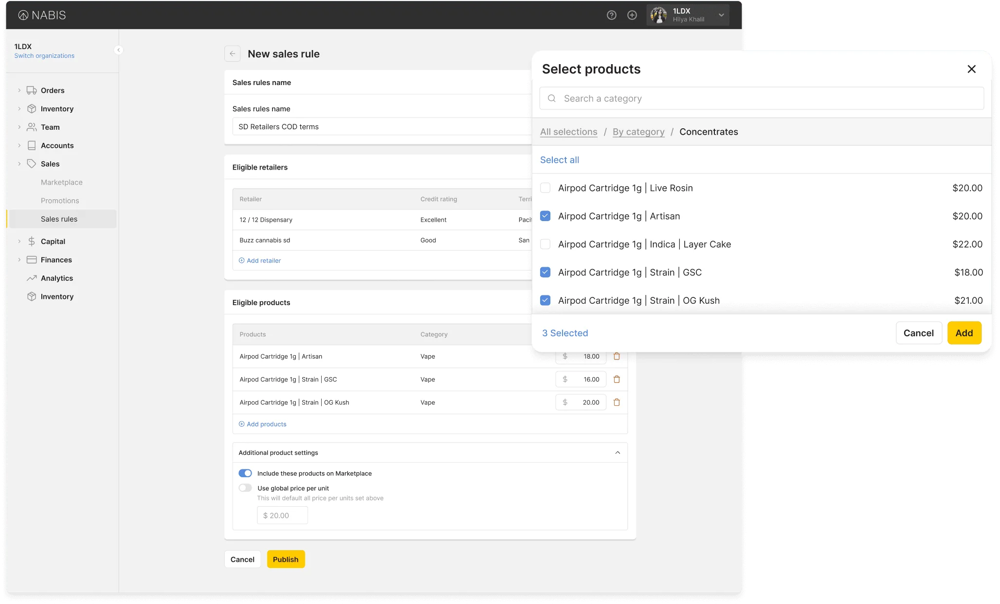
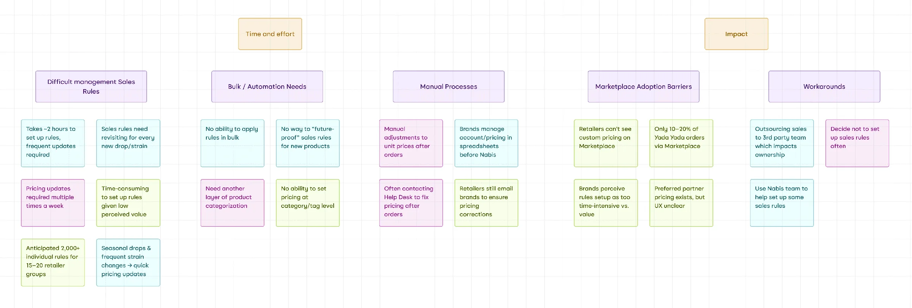
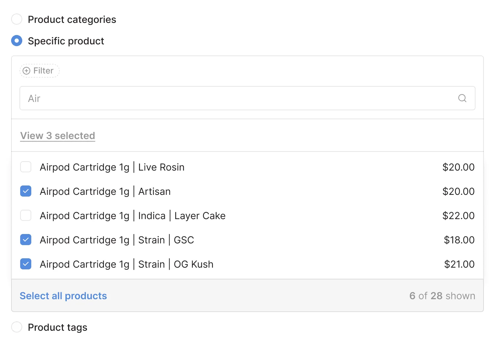
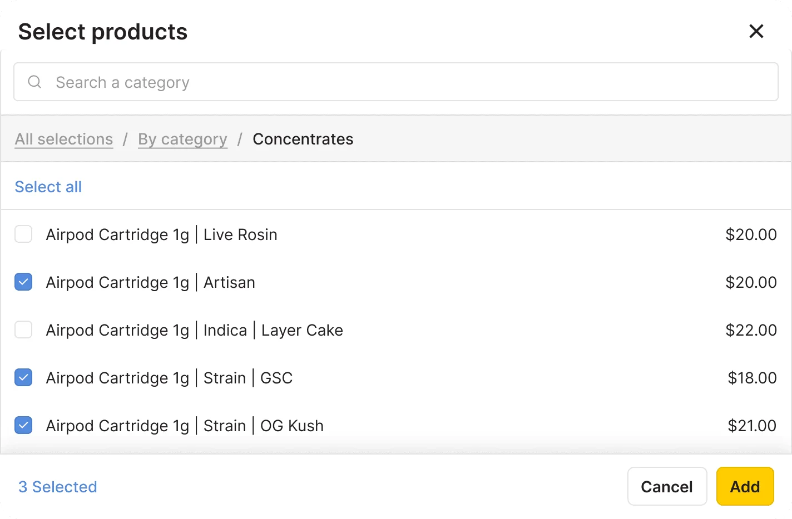
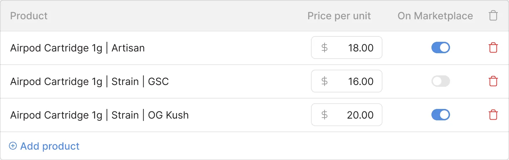
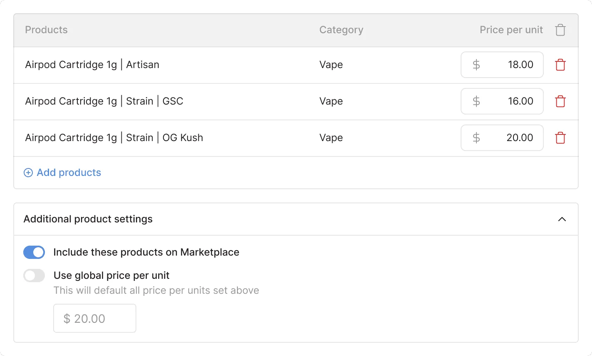
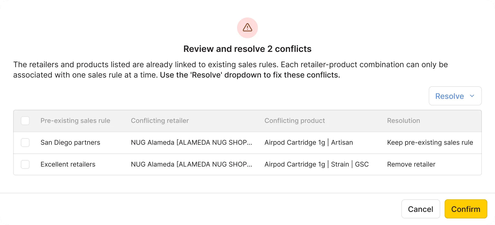

Sales rules
Context
Nabis is a cannabis wholesale platform that connects brands with dispensaries through tech-enabled distribution and logistics.
Sales Rules is a tool that allows Brands to set special pricing for specific retailers, either to reward top customers or penalize those in poor standing. Despite its importance, the feature had long been one of the most cited pain points in our Nabis app with outdated, inflexible functionality that created inefficiencies for both Brands and Retailers.

Problem
Nabis’s wholesaling platform facilitates Brands (manufacturers) selling their products to Retailers (dispensaries). However, a heavily flawed Sales Rules tool prevented Brands from setting up special pricing from their standard wholesales rates.
- Extremely inefficient and difficult to use
- Errors resulting in lost of trust with Nabis
The OLD way.
Setting a special price for one retailer on one product took over a minute of clicking through disconnected pages.
Now scale this to hundreds of retailers for hundreds of products..
Business impact
Improving Sales Rules would help restore trust in the 10+ million dollar Nabis Marketplace and drive more order volume through the Nabis app.
Research
To build context around Sales Rules, I first connected with internal customer experience teammates and reviewed Jira tickets. However, to gain a deeper understanding, I conducted Brand user interviews that helped uncover key opportunities to guide my solution ideation.
Scroll left to right

-
Inaccurate pricing
The error-prone Sales Rules tool often resulted in Retailers seeing incorrect prices, thus requiring frequent manual corrections. Retailers’ trust in Nabis weakened as they moved to working with Brand directly.
-
Excessive time required
Creating sales rules took many hours, which led to Brands offloading the work to Nabis admins, hiring external help, or skipping special pricing on Nabis.
-
Limited customization
Brands could only set sales rules per product and apply them to entire Retailer Groups, making it hard to offer custom pricing to individual retailers.
How can we design a simpler and more efficient Sales Rules tool for Brand users that ensures accurate pricing on the Nabis Marketplace so that we can regain Retailer users’ trust in the platform?
Design Challenges and Solutions
What I learned from user testing and how it shaped my final design.
Challenge 1: Overwhelming Interface Layout
Users found the Retailer and Product selection sections overwhelming, which led to visual fatigue.

Solution 1: Cleaner Layout with Modals
Redesigned the selectors to open within modals, creating a cleaner layout with more breathing room. This made the interface feel more spacious and easier to navigate.

Challenge 2: Repetitive Product Configuration
Updating pricing and Marketplace settings for each product individually was slow and repetitive, especially when configurations were often identical.

Solution 2: Bulk Editing for Efficiency
I implemented bulk editing for products, allowing users to apply settings to multiple items at once — improving efficiency without sacrificing control.

Challenge 3: Confusing Sales Rule Conflicts
Users struggled to understand and resolve conflicts between sales rules. This slowed them down and caused confusion.

Solution 3: Automatic Conflict Resolution
Simplified the workflow by automating conflict resolution. If multiple rules apply to the same product-retailer combo, the system now defaults to the rule with the lowest price—no user intervention needed.
Final prototype
Impact
I conducted a final round of usability testing with Brand users, distributed a post-launch survey, and analyzed live usage data using tools such as Mixpanel and Retool.
- 90%Average Brand user satisfaction
- 75%Increase in efficiency for key workflows
- 83%Increase in sales rules created
What users said
Saves so much time and super easy to use, so overall I’m giving this new dashboard an A++ :)
I just implemented a new retailer group + sales rules. What used to take 2 hours, at minimum, now takes 10 minutes.
Hilya, this is LITERALLY a dream - best feature yet, Thank you so much.
This is 100 times easier to use. Thank you! It looks great.
Just wanted to let you know I demoed the new Sales Rules for the [customer name] and it was so easy to teach and easy for them to comprehend, kudos!